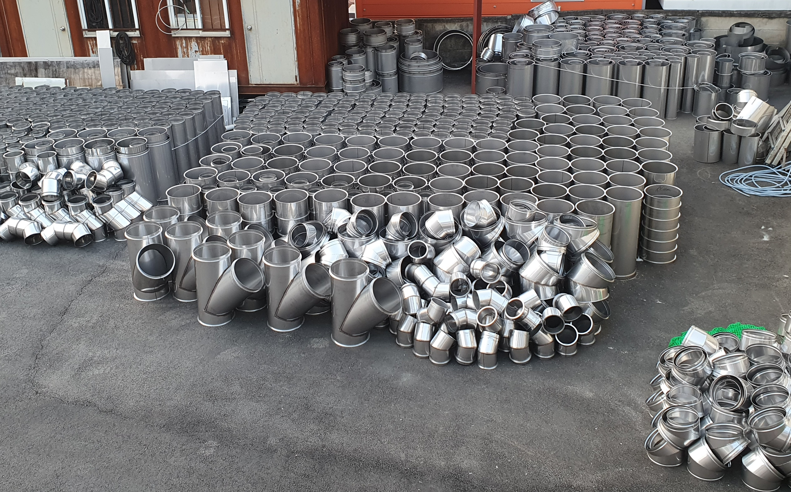

연기가 실내로 새요
기밀성이 부족하거나 시공이 올바르지 않으면 연기가 역류할 수 있습니다.
가격보다 안전,
광고보다 기술.
화목난로의 성능은
연통 시스템에서 시작됩니다.

가격보다 안전, 광고보다 기술.
화목난로 배기 시스템의 기본은 좋은 연통입니다.
내식성과 내열성이 우수한 스테인리스 소재를 사용합니다.
기밀성을 높이고 유지관리가 쉬운 체결 구조입니다.
연기 누설을 줄이고 견고한 내구성을 제공합니다.
제품 판매보다 안전한 배기 시스템 설계를 우선합니다.
화목난로 사용자들이 가장 많이 상담하는 내용입니다.
기밀성이 부족하거나 시공이 올바르지 않으면 연기가 역류할 수 있습니다.
배기 온도가 낮거나 연통 구조가 적절하지 않으면 타르 발생이 증가합니다.
난로 종류와 설치 환경에 따라 적합한 연통이 달라집니다.
올바른 연통 배치는 안전성과 난방 효율을 함께 높여줍니다.
올바른 연통 설치는 안전과 배기 효율의 시작입니다.
난로 출구와 연통을 정확하게 연결합니다.
청소와 유지관리를 위해 T를 설치합니다.
관통부에는 세라크울 이중연통을 사용합니다.
충분한 높이를 확보하여 배기효율을 높입니다.
마감 부속품을 설치하여 안전하게 마무리합니다.
고객님들이 가장 많이 궁금해하는 내용을 정리했습니다.
단관은 주로 실내 연결 구간에 사용하며, 이중연통은 단열이 필요한 벽 관통부나 외부 구간에 사용합니다.
일반적으로 벽 또는 지붕을 통과하는 구간부터 이중연통을 사용하는 것이 좋습니다.
사용 빈도와 장작 상태에 따라 다르지만, 정기적으로 내부 상태를 점검하는 것이 좋습니다.
관련이 있지만 같은 의미는 아닙니다. 연소 과정에서 생성되는 물질의 성분과 상태에 차이가 있습니다.
급격한 방향 전환은 배기 저항을 증가시키고 그을음과 타르가 쌓일 가능성을 높일 수 있습니다.
설치 환경에 따라 필요한 연통 구성이 달라집니다.
제품 구매 전에 전문가와 상담해 보세요.